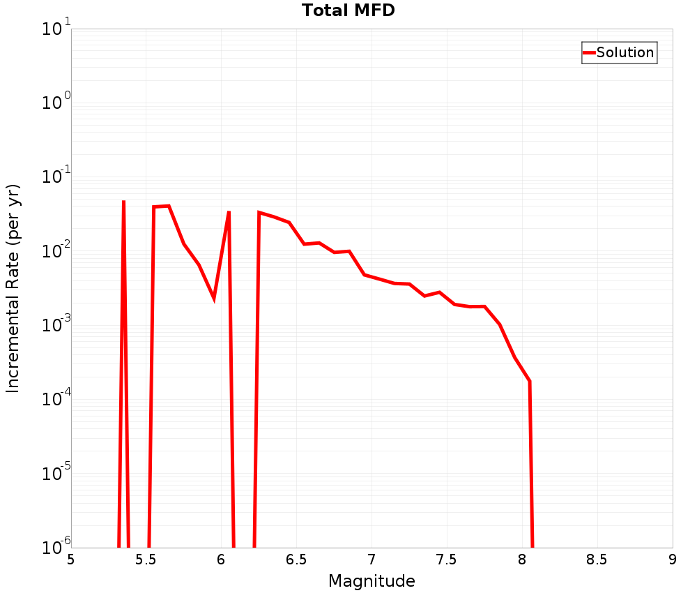
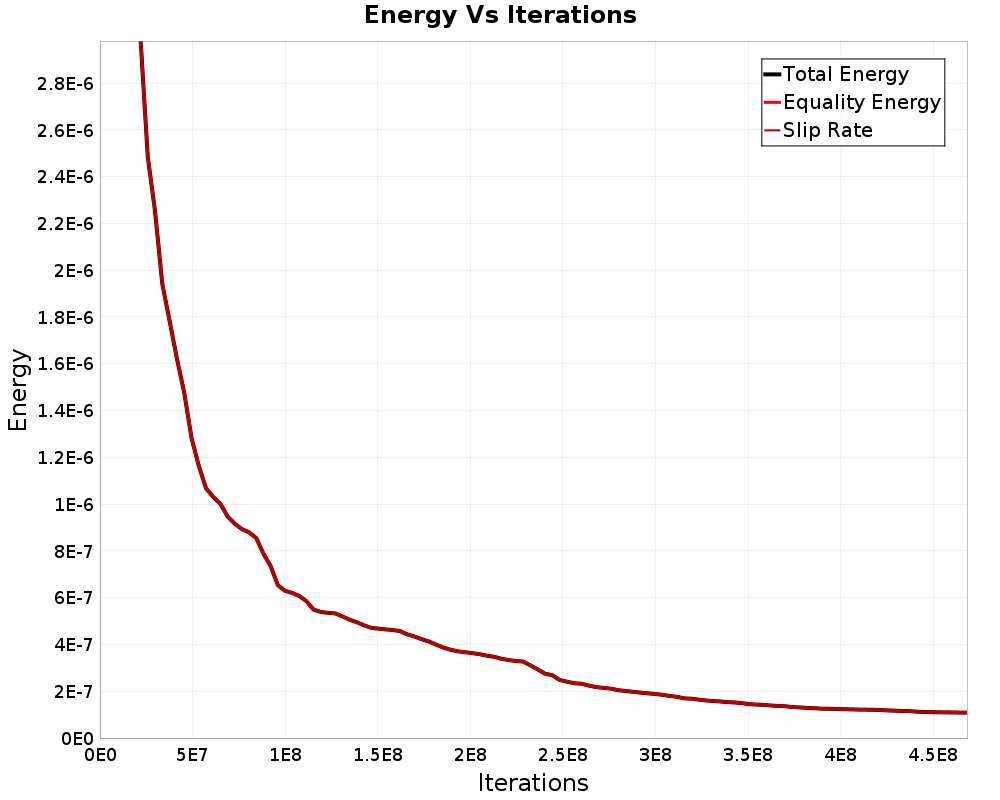
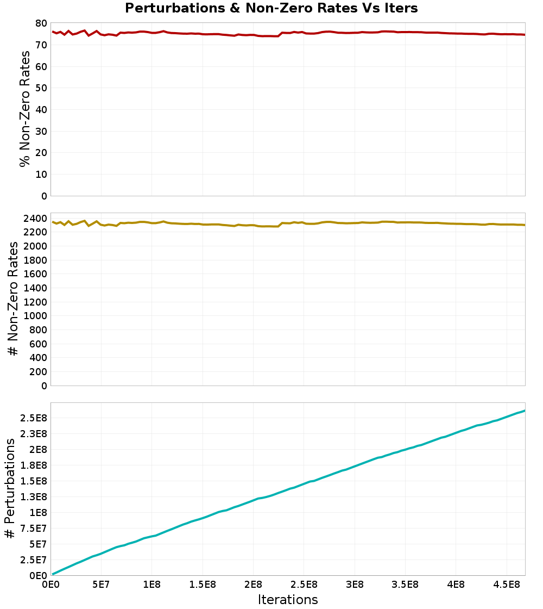
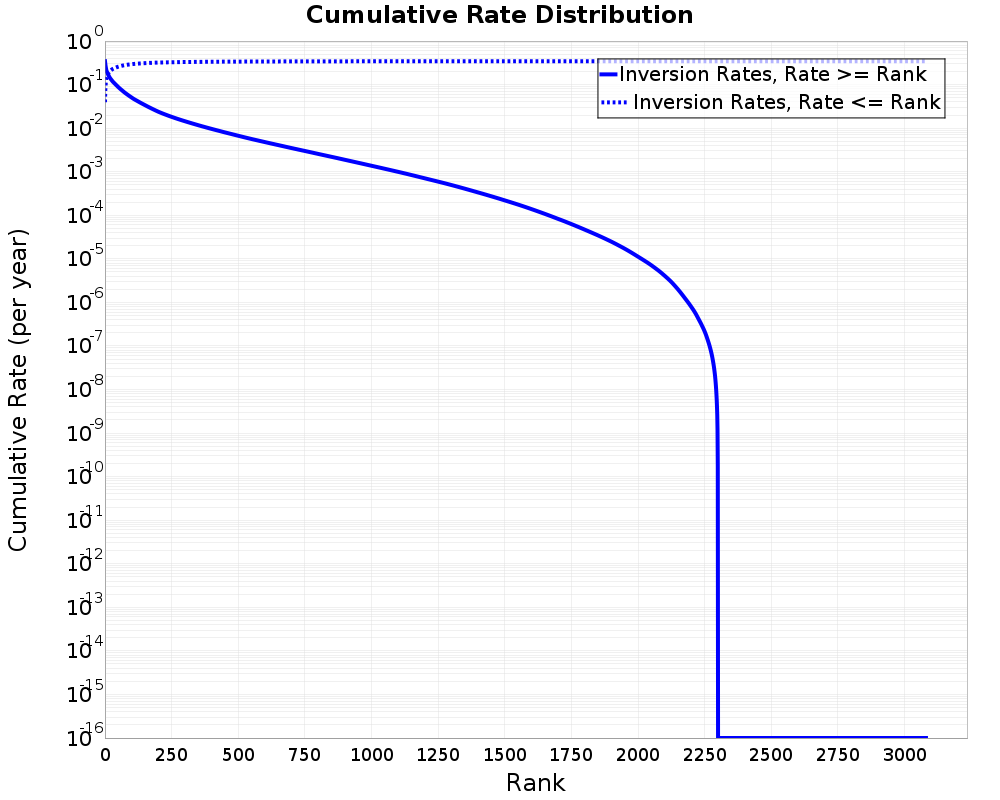
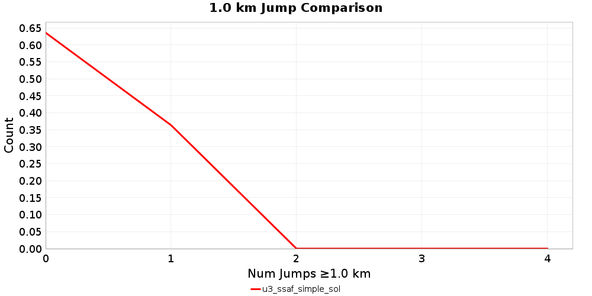

Solution Report: u3_ssaf_simple_sol
| Num Ruptures | 3,081 |
|---|
| Num Single-Stranded Ruptures | 3,081 (100.00%) |
| Total Supra-Seis Rupture Rate | 0.34351426 |
| Total Supra-Seis Recurrence Interval | 2.91 yrs |
| Total Moment Rate | 5.7408218E18 N-m/yr |
| Deformation Model Total Moment Rate | 5.4376452E18 N-m/yr |
| Magnitude Range | [5.36,8.06] |
| Length Range | [9.11,546.57] km |
| Rupture Section Count Range | [2,88] |
Table Of Contents
Solution MFDs
(top)
| Incremental MFDs | Cumulative MFDs |
|---|
|  |  |
Simulated Annealing Energy
(top)
- Iterations: 468,187,480 (3,898,249 /sec)
- Time: 2 mins 0.1 secs
- Perturbations: 261,418,626
- Total energy: 1.0825959E-7
Final Energies
(top)
| Energy Type | Final Energy (2 mins 0.1 secs) | % of Total |
|---|
| Total Energy | 1.0825959E-7 | |
| Equality Energy | 1.0825959E-7 | 100.00% |
| Entropy Energy | 0.0 | 0.00% |
| Inequality Energy | 0.0 | 0.00% |
| Slip Rate | 1.0825959E-7 | 100.00% |
Energy Progress
(top)



Rate Distribution
(top)
- Non-zero ruptures: 2,300 (74.65%)
- Avg. # perturbations per rupture: 84848.63
- Avg. # perturbations per perturbed rupture: 113660.27


Participation Rates
(top)
Rupture Scalar Histograms
(top)
Rupture Length
(top)
Total length (km) of the rupture, not including jumps or gaps.
Rupture Length vs Rupture Rate
(top)
Rupture Magnitude
(top)
Magnitude of the rupture.
Rupture Magnitude vs Rupture Rate
(top)
Subsection Count
(top)
Total number of subsections involved in a rupture.
Subsection Count vs Rupture Rate
(top)
Cluster Count
(top)
Total number of clusters (of contiguous subsections on the same parent fault section) a rupture.
Cluster Count vs Rupture Rate
(top)
Area
(top)
Total area of the rupture (km^2).
Area vs Rupture Rate
(top)
Maximum Jump Dist
(top)
The maximum jump distance in the rupture.
Maximum Jump Dist vs Rupture Rate
(top)
Cumulative Jump Dist
(top)
The total cumulative jump distance summed over all jumps in the rupture.
Cumulative Jump Dist vs Rupture Rate
(top)
Ideal Length Ratio
(top)
The ratio between the total length of this rupture and the 'idealized length,' which we define as the straight line distance between the furthest two subsections.
Ideal Length Ratio vs Rupture Rate
(top)
Ideal Length Difference
(top)
The difference between the total length of this rupture and the 'idealized length,' which we define as the straight line distance between the furthest two subsections.
Ideal Length Difference vs Rupture Rate
(top)
Rake
(top)
The area-averaged rake for this rupture.
Rake vs Rupture Rate
(top)
Cumulative Rake Change
(top)
Cumulative rake change for this rupture.
Mechanism Change
(top)
The number of times a rupture changed mechanisms, e.g., from right-lateral SS to left-lateral or SS to reverse.
Mechanism Change vs Rupture Rate
(top)
Cumulative Azimuth Change
(top)
Cumulative azimuth change for this rupture.
Cumulative Azimuth Change vs Rupture Rate
(top)
Biasi & Wesnousky (2016,2017) Prob
(top)
Biasi & Wesnousky (2016,2017) conditional probability of passing through each jump.
Biasi & Wesnousky (2016,2017) Prob vs Rupture Rate
(top)
Max Slip Rate Difference
(top)
The difference between the slip rate with the highest and lowest slip rate in the rupture.
Max Slip Rate Difference vs Rupture Rate
(top)
Fault Section Connections
(top)
Slip Rates
(top)
Jump Counts Over Distance
(top)
| As Discretized | Rate Weighted |
|---|
 |  |
|  |  |